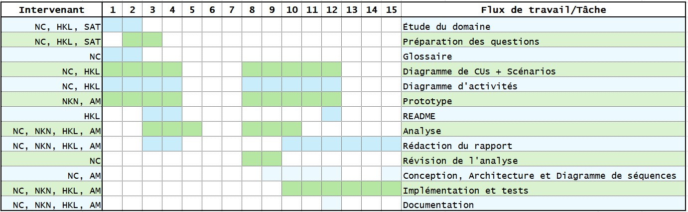
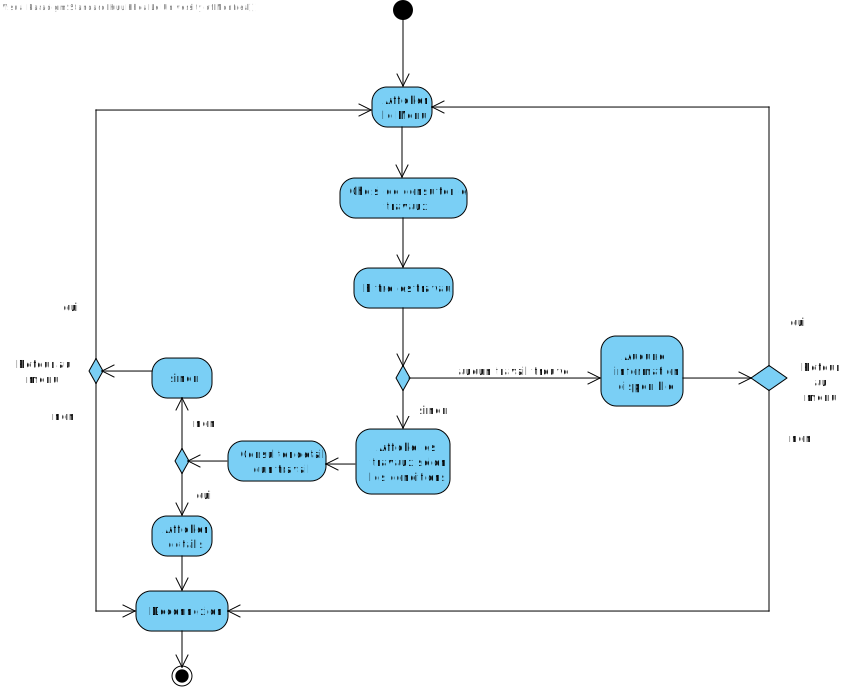
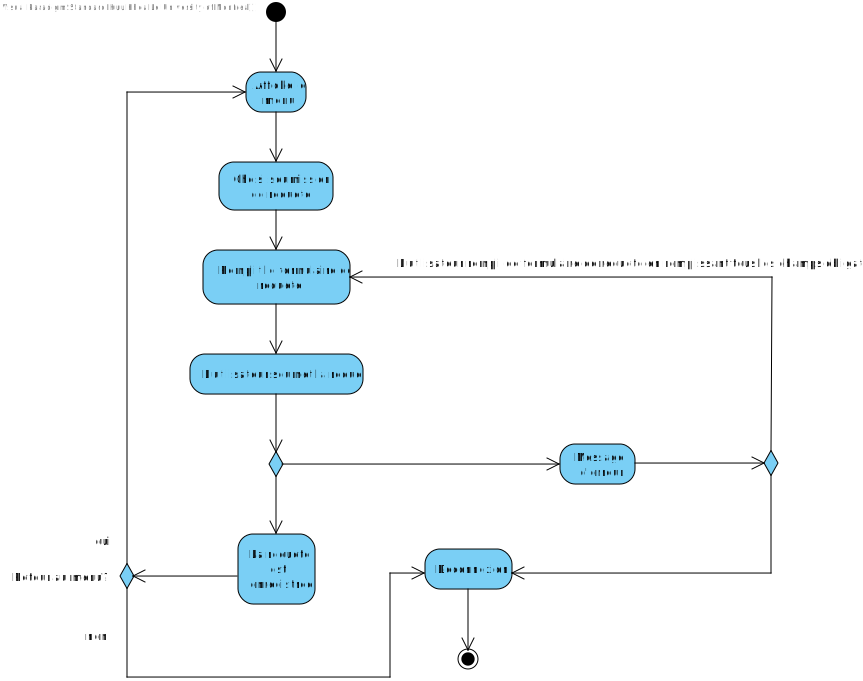
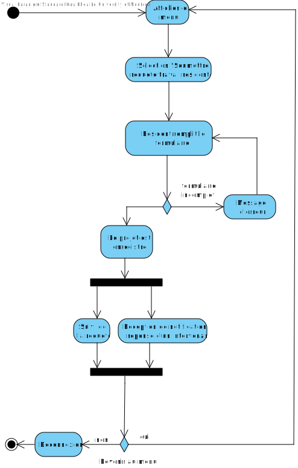
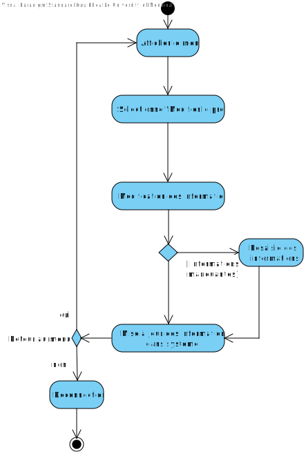
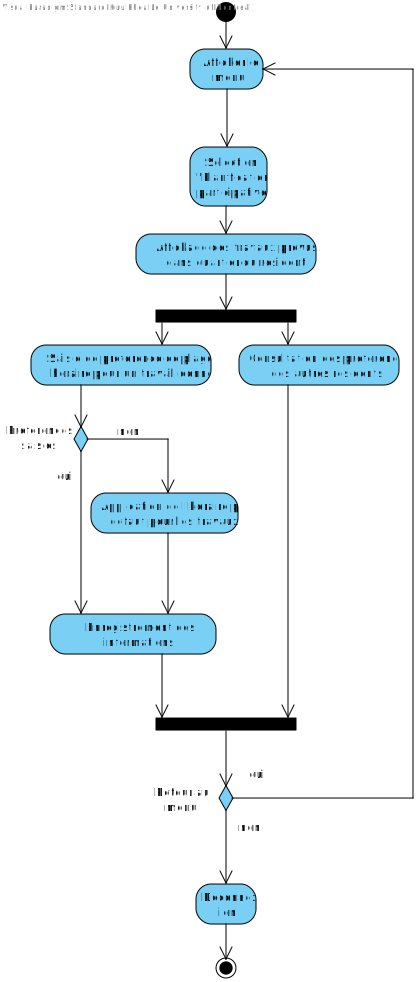
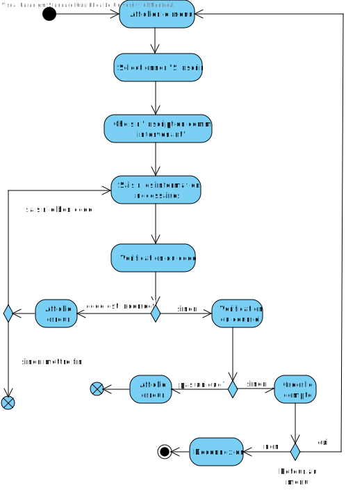
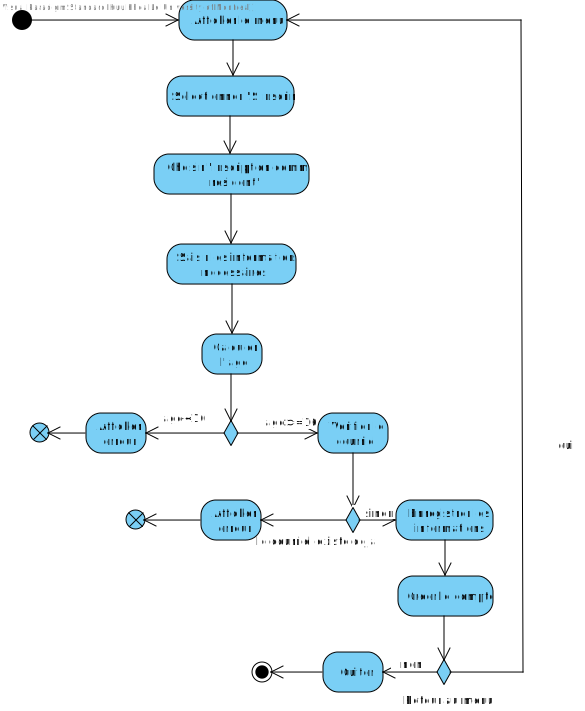
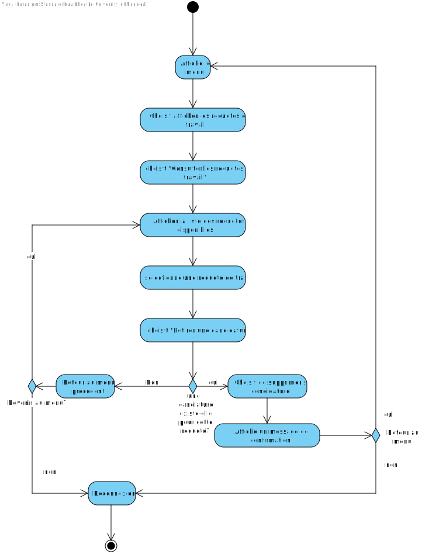

Cadre du projet
Introduction
Le projet "MaVille" vise à créer une application facilitant la gestion et la communication des travaux publics et privés à Montréal,
en améliorant la coordination entre les parties prenantes et en informant les citoyens des impacts sur leur quotidien.
Échéancier
Échéancier du projet MaVille
Exigences
Après de nombreuses rencontres avec le client et une familiarisation avec les activités de recyclage et compostage, nous avons préparé un glossaire rassemblant les termes et expressions clés caractérisant l'environnement.
Glossaire
- Application MaVille
- Outil numérique proposé pour améliorer la communication des activités et des travaux prévus dans la ville de Montréal, visant à réduire les perturbations
pour les résidents. - Authentification
- Processus par lequel un utilisateur fournit ses identifiants (nom d'utilisateur et mot de passe) pour accéder à l'application.
- Chantier
- Zone où des travaux de construction, de rénovation ou d'entretien sont effectués, pouvant affecter la circulation et l'accès aux services.
- Résident
- Citoyen vivant dans la ville, utilisateur potentiel de l'application qui peut consulter les travaux en cours et soumettre des signalements.
- Intervenant
- Professionnel ou agent responsable de la gestion des travaux dans la ville, chargé de soumettre des projets de travaux et de mettre à jour les informations des chantiers.
- Travaux publics
- Travaux réalisés par la ville ou ses partenaires pour améliorer les infrastructures publiques, comme les routes, les ponts, et les réseaux de services.
- Travaux privés
- Travaux réalisés par des entreprises ou des particuliers sur des propriétés privées, souvent nécessitant des autorisations de la Ville.
- Notification personnalisée
- Message envoyé aux utilisateurs de l'application concernant des travaux ou des événements spécifiques, en fonction de leurs préférences et de leur localisation.
- Requête de travail
- Demande soumise par un résident ou un intervenant pour signaler un problème ou proposer un nouveau projet de travaux à la Ville.
- Signalement
- Action par laquelle un résident informe la Ville d'un problème ou d'une entrave liée aux travaux, permettant une réponse rapide.
- Menu principal
- Interface de l'application affichant les options disponibles pour l'utilisateur après l'authentification, permettant de naviguer vers différentes fonctionnalités de l'application.
- Code de la ville
- Notifications personnalisées
- Alertes spécifiques envoyées aux résidents en fonction de leurs préférences et de leur localisation, les informant des travaux ou des changements affectant leur quartier ou les rues qu'ils suivent.
- Info Entraves et Travaux
- Service existant de la Ville de Montréal qui fournit des informations sur les entraves à la circulation et les travaux en cours ou prévus, aidant les résidents à planifier leurs déplacements.
- Planification participative
- Approche permettant aux résidents de contribuer à la planification des travaux en indiquant leurs préférences horaires, favorisant une meilleure coordination et minimisant les perturbations dans leur quartier.
- Statut du projet
- Indicateur de l'avancement d'un projet de travaux, pouvant être "Prévu", "En cours", "Suspendu" ou "Terminé", informant les utilisateurs de l'état actuel des travaux.
Cas d'utilisation
Notes à propos du diagramme
-
Choix des acteurs
- Résident : Utilisateur qui interagit avec l'application pour obtenir des informations sur les travaux et soumettre des requêtes.
- Intervenant : Un professionnel ou une entreprise responsable de la planification, de l'exécution et de la gestion des travaux
publics et privés. Ils interagissent avec l'application pour consulter les requêtes de travail, soumettre de nouveaux projets,
et mettre à jour les informations sur les chantiers en cours. - Système (Application) : L'entité qui gère les interactions entre les utilisateurs et les fonctionnalités de l'application.
-
Choix des relations
- Include : La relation include relie l'authentification à presque tous les cas d'utilisation.
Également, pour planifier un projet de travaux, il faut trouver un horaire qui conviendrait a la majorité des résidents, il faut aussi pouvoir prendre en compte l'avis des residents sur les travaux passés pour ne pas commettre plusieurs fois les mêmes erreurs. Il est donc normal que les cas d'utilisation comme "choisir une plage horaire", "donner son avis" et "consulter les preferences" incluent l'activite de "planifier des projets de travaux"
- Include : La relation include relie l'authentification à presque tous les cas d'utilisation.
Scénarios
Scénario principal
- L'utilisateur saisit ses identifiants (nom d'utilisateur et mot de passe).
- Le système vérifie les identifiants.
- Si les identifiants sont valides, l'utilisateur accède au menu principal.
- Le système affiche le menu principal.
Scénarios alternatifs
Scénario principal
- L'utilisateur choisit l'option de consultation des travaux.
- Le système affiche les travaux en cours ou à venir.
- L'utilisateur peut filtrer les travaux par type ou localisation.
- Le système affiche les travaux filtrés.
Scénarios alternatifs
Scénario principal
- L'utilisateur choisit l'option de soumission d'une requête.
- L'utilisateur remplit le formulaire de requête.
- L'utilisateur valide et soumet la requête.
- Le système enregistre la requête et affiche un message de confirmation.
Scénarios alternatifs
Scénario principal
- L'intervenant accède au menu principal après authentification.
- L'intervenant choisit l'option "Soumettre un nouveau projet.
- L'intervenant remplit les informations du projet.
- Le système valide les informations.
- Si toutes les informations sont correctes, le projet est enregistré avec succès.
- Le système affiche un message de confirmation.
- L'intervenant retourne au menu principal.
Scénarios alternatifs
Scénario principal
- L'intervenant se connecte à l'application.
- L'intervenant sélectionne le chantier à mettre à jour.
- L'intervenant modifie les informations du chantier.
- L'intervenant enregistre les modifications.
- Le système affiche un message de confirmation que les informations ont été mises à jour.
Scénarios alternatifs
Scénario principal
- L'utilisateur paramètre ses préférences de notification dans l'application.
- Le système enregistre les paramètres.
- L'utilisateur reçoit des alertes en fonction des paramètres définis.
Scénarios alternatifs
Scénario principal
- L'intervenant se connecte à l'application.
- L'intervenant sélectionne l'option "Consulter les requêtes de travail".
- L'intervenant peut filtrer les requêtes par type de travail, date, ou localisation.
- L'application affiche la liste des requêtes de travail disponibles.
- L'intervenant peut visualiser les détails de chaque requête et soumettre sa candidature pour la réaliser.
Scénarios alternatifs
Scénario principal
- L'utilisateur se connecte à l'application.
- L'utilisateur sélectionne l'option "Modifier mon profil".
- L'utilisateur modifie les informations (nom, adresse, mot de passe, etc.).
- L'utilisateur enregistre les modifications.
- Le système confirme la mise à jour du profil.
Scénarios alternatifs
Scénario principal
- Le résident se connecte à l'application.
- Le résident sélectionne l'option "Planification participative" dans le menu.
- Le système affiche la liste des travaux prévus dans le quartier du résident.
- Le résident saisit ses plages horaires préférées pour les travaux.
- Le résident valide et enregistre ses préférences.
- Le système enregistre les préférences du résident.
Scénarios alternatifs
Scénario principal
- Le résident se connecte à l'application.
- Le résident sélectionne l'option "Donner un avis" dans le menu.
- Le résident rédige son avis sur les travaux (qualité, déroulement) et l'intervenant.
- Le résident valide et enregistre son avis.
- Le système enregistre l'avis et le transmet à l'intervenant.
Scénarios alternatifs
Scénario principal
- Le résident se connecte à l'application.
- Le résident sélectionne l'option "Consulter les préférences des autres résidents" dans le menu de planification participative.
- Le système affiche un résumé des plages horaires préférées par les autres résidents.
- Le résident peut utiliser ces informations pour ajuster ses propres préférences d'horaires si nécessaire.
- Le résident valide et quitte l'interface de consultation.
Scénarios alternatifs
Scénario principal
- L'utilisateur accède à la page d'accueil de l'application.
- L'utilisateur sélectionne l'option "S'inscrire".
- L'utilisateur choisit "Inscription comme résident".
- L'utilisateur saisit les informations requises .
- Le système valide les informations saisies.
- Le compte est créé.
- L'utilisateur reçoit un message de confirmation et est redirigé vers le menu principal.
Scénarios alternatifs
Scénario principal
- L'utilisateur accède à la page d'accueil de l'application.
- L'utilisateur sélectionne l'option "S'inscrire".
- L'utilisateur choisit "Inscription comme intervenant".
- L'utilisateur saisit les informations requises
- L'utilisateur soumet le formulaire d'inscription.
- Le système valide les informations saisies.
- Le compte est créé.
- L'utilisateur reçoit un message de confirmation et est redirigé vers le menu principal.
Scénarios alternatifs
Diagramme d'activités
Diagramme d'activité pour : Connexion
Diagramme d'activité pour : Navigation du menu principal

Diagramme d'activité pour : Consulter travaux
Diagramme d'activité pour : Soumettre une requête
Diagramme d'activité pour : Soumettre un nouveau projet
Diagramme d'activité pour : Mettre à jour les informations de chantier

Diagramme d'activité pour : Personaliser ses notifications

Diagramme d'activité pour : Modifier les paramètres de son profil utilisateur
Diagramme d'activité pour : Participer à une planification des travaux
Diagramme d'activité pour : Consulter la liste des requêtes de travail

Diagramme d'activité pour : Inscription en tant qu'intervenant
Diagramme d'activité pour : Inscription en tant que résident
Diagramme d'activité pour : Confirmation de la candidature d'un intervenant

Diagramme d'activité pour : Consultation des entraves
Diagramme d'activité pour : Gestion des conflits de préférences des résidents

Diagramme d'activité pour : Mise à jour des informations de travaux par un intervenant
Diagramme d'activité pour : Recherche de travaux par un résident
Diagramme d'activité pour : Retrait d'une candidature pour un intervenant
Diagramme d'activité pour : Soumission d'une candidature pour un intervenant
Analyse
Risques
-
Risques d'une mauvaise utilisation
- Mauvaise communication d'informations, entraînant confusion et frustrations.
- Signalements inappropriés surchargeant le système et retardant la résolution de vrais problèmes.
- Interface peu intuitive décourageant l'inscription et l'utilisation de l'application.
- Comptes frauduleux manipulant les informations ou soumettant des requêtes inappropriées.
-
Risques d'une bonne utilisation
- Trop de notifications submergeant les utilisateurs, incitant à ignorer les alertes importantes.
- Dépendance à l'application, négligeant d'autres sources d'information.
- Mauvais traitement des données personnelles, posant des problèmes de confidentialité.
- Attentes élevées des résidents en matière de réactivité des intervenants.
-
Risques d'une non-utilisation
- Manque d'information sur les travaux, nuisant à la mobilité et à l'accès aux services.
- Insatisfaction générale parmi les citoyens.
- Inefficacité des travaux due à une mauvaise coordination.
- Perte de participation citoyenne dans la planification participative.
Besoins non-fonctionnels
- Performance optimale avec un temps de chargement minimum.
- Gérer un nombre croissant d'utilisateurs et de données.
- Sécurité des données personnelles.
- Accessibilité conforme aux normes pour tous les utilisateurs.
- Compatibilité sur divers appareils et navigateurs.
- Fiabilité avec une disponibilité en tout temps.
- Facilité d'utilisation.
- Maintenance facile.
- Documentation complète.
- Support technique réactif pour assistance aux utilisateurs.
Besoins matériels
Description et justification des ressources nécessaires pour le projet :
-
Outils de stockage :
-
Description : Des serveurs dédiés ou des solutions cloud (comme Google Cloud) pour héberger l'application
et les bases de données. -
Justification : Une bonne infrastructure est nécessaire pour gérer les utilisateurs, les projets et les données
en temps réel, en garantissant une disponibilité élevée et une sécurité des données.
-
Description : Des serveurs dédiés ou des solutions cloud (comme Google Cloud) pour héberger l'application
-
Systèmes de sauvegarde :
- Description : Disques durs externes et/ou services de sauvegarde cloud.
-
Justification : Garantir la continuité des opérations en cas de perte de données ou de défaillance système.
Les sauvegardes régulières protègent les informations.
-
Équipements réseau :
- Description : Routeurs, switchs, et pare-feux.
-
Justification : Assurer une connexion réseau sécurisée et rapide pour le transfert de données entre l'application
et les utilisateurs. Une bonne infrastructure réseau est essentielle pour éviter les interruptions de service.
-
Dispositifs utilisateurs :
- Description : Ordinateurs, tablettes, et smartphones.
-
Justification : Les utilisateurs (résidents et intervenants) devront accéder à l'application via divers appareils.
L'application doit être compatible avec plusieurs systèmes d'exploitation pour maximiser l'accessibilité.
-
Équipement de développement :
- Description : Ordinateurs et logiciels de développement pour l'équipe technique.
- Justification : Les développeurs auront besoin de matériel performant pour coder, tester et déployer l'application efficacement.
Solution de stockage
Description de la solution de stockage :
- Solution proposée : Utilisation de services de stockage cloud (ex: Google Cloud Storage).
-
Description : Les données de l'application (données utilisateur, informations sur les travaux, fichiers de sauvegarde) seront stockées
dans le cloud pour garantir une accessibilité 24/7. Les services cloud offrent également des options de sauvegarde intégrées, réduisant ainsi
le risque de perte de données. -
Justification : Le cloud permet d'évoluer facilement en fonction de la croissance des utilisateurs et des données, tout en maintenant des coûts
opérationnels réduits. De plus, les solutions cloud sont souvent plus sécurisées que les systèmes locaux, avec des protections contre les accès
non autorisés.
Solution d'intégration
Description de la solution d'intégration :
- Solution proposée : Utilisation d'API RESTful pour l'intégration entre les différents composants de l'application.
-
Description : L'application sera conçue avec une architecture modulaire, permettant l'intégration facile de différents services (par exemple,
notifications, gestion des utilisateurs, systèmes de signalement). Les API RESTful permettront la communication entre le front-end et le back-end, ainsi que
l'intégration avec d'autres systèmes si nécessaire. -
Justification : Cette approche facilite le développement collaboratif, la maintenance, et l'évolution de l'application à long terme.
En utilisant des API standardisées, il sera plus facile d'ajouter des fonctionnalités ou d'intégrer de nouveaux services à l'avenir.
Prototype
Le prototype en fichier .jar contient l'interface du côté résident et intervenant.
Informations de connection:
Utilisateur: citoyen ou intervenant
Mot de passe: maVille25.
Le cas d'utilisation couvert par ce prototype est la consultation des travaux en cours.
Commande pour exécuter le prototype sur un terminal:
java -jar MaVille.jar